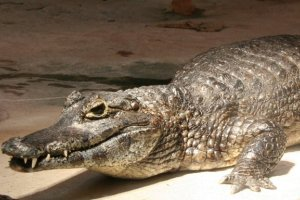

Jacaretinga (Caiman crocodilus). Nativo do Brasil, Colômbia, Costa Rica, Equador, El
Salvador, Guiana Francesa, Guatemala, Guiana, Honduras, México, Nicarágua, Panamá, Peru,
Suriname, Trinidad e Tobago e Venezuela; e introduzido em Cuba, Porto Rico e Estados
Unidos. Status de conservação: risco mínimo.